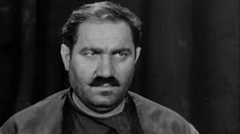

Զուրաբ Լափերաձե
Կենսագրություն
Զուրաբ (Կուկուրի) Լաֆերաձե (վրացերեն՝ ზურაბ (კუკური) ლაფერაძე; ծնվել է հունիսի 15, 1926, Նաձվաում։ Եղել է վրացի դերասան, Վրացական ԽՍՀ ժողովրդական արտիստ (1976) և Վրաստանի կինեմատոգրաֆիստների ստեղծագործական միության անդամ։
1944-1946 թվականներին սովորել է Մարջանիշվիլիի թատրոնին կից ստուդիայում։ Միևնույն ժամանակ նա ելույթ է ունեցել նույն թատրոնի բեմում։
1946-ից 1956 թվականներին աշխատել է Սուխումի թատրոնի վրացական թատերախմբում, իսկ 1956 թվականից՝ «Գրուզիա-ֆիլմ» կինոստուդիայում։
1958 թվականից մինչև մահը նա Մարջանիշվիլիի թատրոնի դերասան էր։
Զուրաբը մահացել է Իմերեթիաում դեկտեմբերի 1–ին 1990թ։ Թաղված է Թբիլիսիի Սաբուրթալոյի պանթեոնում։